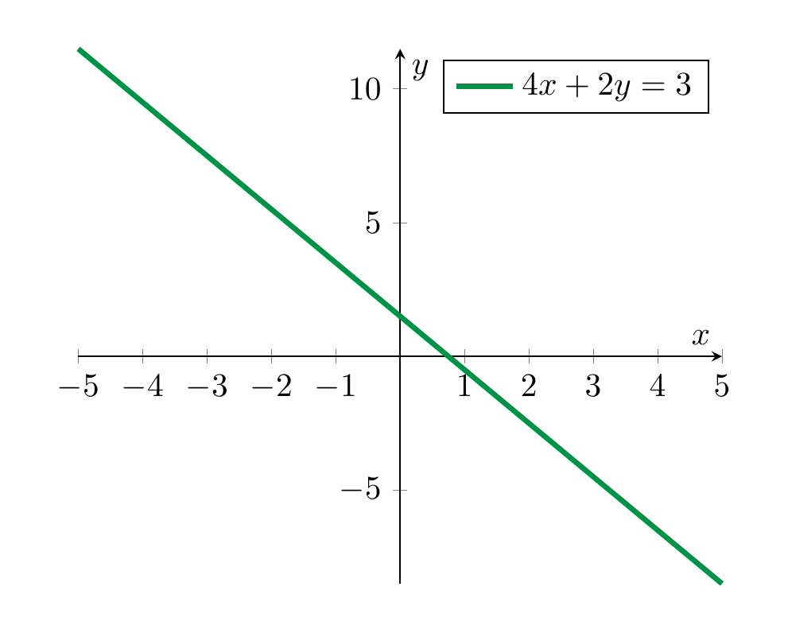

Systems of Linear Equations¶
Linear equations¶
Definition 2.1
Let \(a, b, c \in {\bf R}\) be fixed real numbers. An equation of the form
is called a linear equation in the variables (or unknowns) \(x\) and \(y\).
More generally, an equation of the form
is called a linear equation in the variables \(x_1, \dots, x_n\). The real numbers \(a_1, \dots, a_n\) are called the coefficients and \(b\) is the constant term of the equation. The solution set consists precisely of those collections (more formally, ordered tuples) of numbers \(r_1\), \(r_2\), up to \(r_n\) such that substituting the variables \(x_1, \dots, x_n\) by \(r_1, \dots, r_n\) respectively, the equation holds, i.e., such that
The name “linear” stems from the geometry of the solution sets, as the following example shows:
Example 2.2
The equation
(2.3)
is a linear equation (with coefficients \(4\) and \(2\) and constant term 3).
We can solve this equation by subtracting \(4x\) from both sides, which gives
and dividing by 2, which gives
(2.4)
In each of these steps, one equation holds precisely if the next one holds. Thus the solution set of is the same as the solution set of the equation . That solution set is therefore the following set:
Here we use standard set-theoretic notation, cf. §Chapter A. Thus, the above means the set of all pairs \((x, -2x + \frac 3 2)\), where \(x\) is an arbitrary real number. In particular, since there are infinitely many real numbers \(x\), this is an infinite set.
Graphically, the solution set is the set of points as depicted below:

In general, any equation of the form
with \(a \ne 0\) or \(b \ne 0\) will have a line as a solution set (what happens if \(a=b=0\)?, cf. Exercise 2.6).
Remark 2.5
In the computation above it was critical that we were able to divide 3 by 2, i.e., have the rational number \(\frac 3 2\) at our disposal. The real numbers \({\bf R}\) (and also the rational numbers \({{\bf Q}}\)) form a so-called field, which among other properties means that one can divide by non-zero numbers. Another example of a field are the complex numbers \({{\bf C}}\). The integers \({{\bf Z}} = \{ \dots, -2, -1, 0, 1, 2, \dots \}\) do not form a field. Solving linear systems in the integers is somewhat harder than it is in the rationals or reals. This course will focus on discussing linear algebra over the real numbers, with the exception of the discussion of eigenvalues, where the consideration of complex numbers is unavoidable.
Remark 2.6
A great number of equations arising in physics, biology, chemistry and of course mathematics itself are linear. Nonlinear equations such as
are not primarily studied in linear algebra. For such more complicated equations, linear algebra is still useful, however. This is accomplished by replacing such equations by linear approximations. The first idea in that direction is the derivative of a function \(f\), which serves as a best linear approximation of a differentiable function. Such linearization techniques are beyond the scope of this lecture.
Systems of linear equations¶
Definition 2.7
A system of linear equations is a collection of linear equations (involving the same variables). It is also sometimes called a linear system or even just a system.
The interest in linear systems lies in finding those tuples of numbers satisfying all equations at once (as opposed to just one of them, say). We will start with two equations in two variables.
Example 2.8
The equations
(2.9)
form a system of linear equations (in the variables \(x\) and \(y\)).
We solve this system algebraically by subtracting \(y\) in the first equation, which gives
and substituting this into the second equation, which gives
or
or
or finally
Inserting this back above, gives
Note that again each equation holds (for given values of \(x\) and \(y\)) precisely if the preceding one holds. Thus, the original system has the same solution set as the last two equation (together). This system of equations therefore has a unique solution, namely
To say the same using different symbols: the solution set of the system Equation (2.9) is a set consisting of a single element:
It is very useful to also understand this process geometrically, which we do by plotting the two lines that are the solutions of the individual equations:

The algebraic computation of having precisely one solution is matched by the fact that two non-parallel lines in the plane (which are the solution sets of the individual equations) exact in precisely one point.
The above linear system Equation (2.9) had exactly one solution. This need not always be the case, as the following examples show:
Example 2.10
The system
has no solution. This can be seen algebraically and also geometrically:

The system has no solution, which is paralleled by the fact that two parallel, but distinct lines in the plane do not intersect.
Example 2.11
The system
has infinitely many solutions, namely all pairs of the form
with an arbitrary real number \(x\). Geometrically, this is explained by taking the “intersection” of the same line twice.

In other words, even though there are two equations above, they both have the same solution set. Thus, in some sense one of the equations is redundant, i.e., the solution set of the entire system equals the solution set of either of the equations individually.
Summary 2.12
The solution set of an equation of the form
is a line (unless both \(a\) and \(b\) are zero).
The solution set of a system of equations of the form
can take three forms:\
| number of solutions | geometric explanation |
|---|---|
| exactly one solution | the unique intersection point of two non-parallel lines |
| no solution | two distinct parallel lines don’t intersect |
| infinitely many solutions | a line intersects itself in infinitely many points |
Definition 2.13
A homogeneous linear system is one in which the constant terms in all equations are zero. (I.e., in the notation in below, \(b_1 = \dots = b_n = 0\).)
Remark 2.14
For a homogeneous linear system, there is always at least one solution namely
This solution is called the trivial solution.
Elementary operations¶
The combination of geometric intuition with algebraic computations is very useful. However, the former is of limited use when it comes to systems with three variables, and hardly useful anymore for systems involving four or more variables. We will therefore develop notions and techniques that enable us to handle linear systems more systematically.
Definition 2.15
We say that two linear systems are equivalent if they have the same solution sets.
Example 2.16
In Example 2.8, we considered the system
and found that it has a unique solution, namely
Thus the previous system is equivalent to the system
Of course, in comparison to the original system, the latter system is much easier to understand, since one can simply read off the solution without any effort. The purpose of elementary operations is to transform a given system into an equivalent system of which the solutions can be read off.
Definition 2.17
Given a linear system, the following operations are called elementary operations:
-
interchange two equations,
-
multiply one equation by a non-zero (!) number,
-
add a multiple of one equation to a different (!) equation.
These operations are called “elementary” since they are so simple to perform. Their utility comes partly from the following fact:
Theorem 2.18
Consider a linear system. This linear system is equivalent to (i.e., has the same solutions as) any linear system obtained by performing any number of elementary operations.
This theorem, which we will prove later on (Corollary 4.77) when we have more tools at our disposal may sound a little abstract at first sight. It is however actually simple to comprehend and, very importantly, extremely useful in practice.
Example 2.19
Consider the system
We add twice the first equation to the second (elementary operation 3.):
We interchange the second and third equation (elementary operation 1.):
We multiply the second equation by \(\frac 1 2\) (in other words, we divide it by 2; elementary operation 2.):
We add \((-2)\) times the third equation to the first (elementary operation 3.)
These steps are combinations of elementary operations. According to Theorem 2.18, the original system is equivalent (i.e., has the same solutions) as the final one. The benefit is, of course, that the solutions of the final system are trivial to comprehend: it has exactly one solution, the triple
Thus, the original system also has exactly that one solution.
Matrices¶
It is time to use some better tools to do the bookkeeping needed to solve linear systems. Matrices help doing that. Later on (§Chapter 4), we will use matrices in a much more profound way.
Definition 2.20
A matrix is a rectangular array of numbers. We speak of an \(m \times n\)-matrix (or \(m\)-by-\(n\) matrix) if it has \(m\) rows and \(n\) columns, respectively. If \(m=n\), we also call it a square matrix.
An \(1 \times n\)-matrix (i.e., \(m=1\) and \(n\) is arbitrary) is called a row vector. Similarly, an \(m \times 1\)-matrix is called a column vector.
Example 2.21
It is customary to denote matrices by capital letters. For example,
is a \(2 \times 2\)-matrix (or square matrix of size 2).
is a \(2 \times 3\)-matrix and
is a \(3 \times 2\)-matrix.
The entries of a matrix may also be variables. For example
is a column vector (or a \(2 \times 1\)-matrix), whose entries are two variables; \(\left ( \begin{array}{cc} x_1 & x_2 \end{array} \right )\) is a row vector (or a \(1 \times 2\)-matrix).
Notation 2.22
A matrix whose entries are unspecified numbers is denoted like so:
Thus, the number \(a_{ij}\) is the entry in the \(i\)-th row and the \(j\)-th column. A more compressed notation expressing the same is
or even just
Definition 2.23 (Related exercises: Exercise 4.46)
Let
(2.24)
be a linear system (consisting of \(m\) equations, in the unknowns \(x_1, \dots, x_n\); the numbers \(a_{ij}\) are the coefficients, the numbers \(b_1, \dots, b_n\) are the constants).
The matrix associated to this system is the following \(m \times (n+1)\)-matrix (the vertical bar is just there to remind ourselves that the last column corresponds to the constants in the equations above; one also speaks of an augmented matrix)
(2.25)
In other words, the matrix is the rectangular array containing the coefficients and the constants of the individual equations, and suppresses the mention of the variables.
Example 2.26
The matrix associated to the system
is the \(2 \times 3\)-matrix
Of course, the process of associating a matrix to a linear system can be reversed since any \(m \times (n+1)\)-matrix gives rise to a linear system: the matrix gives rise to the linear system . For example, the \(2 \times 3\)- matrix
gives rise to the linear sytem
Gaussian elimination¶
Theorem 2.18 is a useful insight, but it lacks an important feature: it does not directly instruct us how to simplify any given linear system. (In Example 2.19, we did end up with a particularly simple linear system, but we did not have any a priori guarantee for this to happen. If we had chosen some “stupid” elementary operations instead, we would not have simplified the system.) Gaussian elimination is an algorithmic process that does just that: it is a simple procedure that is guaranteed to yield the simplest possible equivalent form of any given linear system.
In view of the correspondence between linear systems and matrices, we will first phrase this process in terms of matrices, and then translate it back to the problem of solving linear systems.
Among the myriad of all possible matrices, the following matrices are the “nice guys”.
Definition 2.27
A matrix is in row-echelon form (or is called a row-echelon matrix) if the following conditions are satisfied:
-
If there are any zero rows (i.e., consisting only of zeros), then these are at the bottom of the matrix.
-
In a non-zero row, the first non-zero (starting from the left) is a 1. (It is called the leading 1.)
-
Each leading 1 is to the right of all the leading 1’s in the rows above it.
If, in addition to the above conditions, each leading 1 is the only non-zero entry in its column, then the matrix is in reduced row-echelon form.
Maybe saying more than a thousand words is this picture of a row-echelon form. Here, the asterisks indicate an arbitrary number. If, in addition, all the underlined asterisks are zero, then the matrix is a reduced row-echelon matrix.
In view of the correspondence between linear systems and matrices, we transport the language of elementary operations (Definition 2.17) to matrices as follows.
Definition 2.28 (Related exercises: Exercise 4.4, Exercise 4.7, Exercise 2.25, Exercise 4.47)
The following operations on a given matrix \(A\) are called elementary row operations:
-
interchange any two rows,
-
multiply any row by a non-zero (!) number,
-
add a multiple of any row to a different (!) row.
Method 2.29 (Related exercises: Exercise 4.4, Exercise 4.47, Exercise 2.12)
(Gaussian algorithm or Gaussian eliminiation) Every matrix can be brought to reduced row-echelon form by a sequence of elementary row operations. This can be achieved using the following algorithmic process:
-
If the matrix consists only of zeros, stop: then the matrix is in reduced row-echelon form.
-
Otherwise, find the first column from the left having a non-zero entry. Call this entry \(a\). Interchange this row (elementary operation 1.) so that it is in the top position.
-
Multiply the new top row by \(\frac 1 a\) (elementary operation 2.; note this is possible since \(a \ne 0\), see also Remark 2.5). Thus the first row has a leading 1.
-
By adding appropriate multiples of the first row to the remaining rows (elementary operation 3.), ensure that the entry between the leading 1 are all zero.
From this point on, the first row is not touched anymore, and the four steps above are applied to the matrix consisting of the remaining rows.
This produces a (possibly not reduced) row-echelon form. It can be finally brought into reduced row-echelon form by adding appropriate multiples of rows with leading 1’s to the rows above them (elementary operation 3.), beginning at the bottom.
Example 2.30
We apply the Gaussian algorithm to the matrix
The first three steps don’t change the matrix (since the top-left entry is already 1). Step (4): add \(-2\) times the first row to the second row; and add \(-5\) times the first row to the third, which gives
The remaining steps only affect the second and third row. Step (2) picks the second row, and \(a = -3\) (underlined). It is already in the top position (the first row being discarded for the remainder of the algorithm), so Step (2) does not change the matrix. Step (3) gives the matrix
Step (4) adds \(-6\) times the second row to the third, which gives
At this point also the second row is discarded, which leaves only the last row, which consists of zeros. By Step (1), the algorithm stops at this point.
This matrix is in row-echelon form, but not yet reduced. To reduce it, add \(-2\) times the second row to the first, which gives
When applied to matrices associated to linear systems, Gaussian eliminiation becomes very useful for solving linear systems:
Method 2.31 (Related exercises: Exercise 4.9, Exercise 4.16, Exercise 7.4, Exercise 7.26, Exercise 4.3, Exercise 4.4, Exercise 2.25, Exercise 4.9, Exercise 4.46, Exercise 4.47, Exercise 2.12)
-
Form the augmented matrix corresponding to the given linear system.
-
Perform Gaussian elimination to that matrix (Method 2.29), giving a reduced row-echelon matrix.
-
If a row of the form
occurs, the system has *no* solutions.
- Otherwise, we call the variables corresponding to the columns not containing a leading 1 free variables. The values of these variables can be chosen to be arbitrary real numbers. The variables that correspond to columns that do contain a leading 1 are uniquely specified by these free variables. Their values can be determined by solving the equations corresponding to the row-echelon matrix for the leading variables.
Example 2.32
Consider the system
The augmented matrix associated to this is the one in Example 2.30. Gaussian algorithm brings it into the reduced row-echelon form
This matrix corresponds to the linear system
According to Theorem 2.18, this linear system has the same solution set as the original one.
The leading variables are \(x\) and \(y\), so that \(z\) is a free variable. Solving the second equation for \(y\) then gives
and similarly
We obtain that the solution set to the original linear system consists of triples of the form
in which \(z\) is an arbitrary number (and \(x\) and \(y\) are determined by \(z\) as indicated).
Exercises¶
Describe all the solutions of the equation
Draw a picture of that solution set. Is it a homogeneous equation?
Consider the equation
What is its solution set?
Consider the same equation, but now with two variables \(x\) and \(y\) being present (so we could rewrite the equation as \(x + 0 \cdot y = 3\) in order to emphasize the presence of \(y\)). What is the solution set this time?
Consider the system
What is the matrix associated to that system? Using Method 2.31, find all solutions of that system.
Consider the (augmented) matrix
What type of matrix is that? (I.e., what \(m \times n\)-matrix.) If \(A = (a_{ij})\), what is \(a_{13}\) and \(a_{31}\)? What is the linear system associated to that matrix? (Hint: one equation reads “\(\dots = 3\)”. For consistency, call the variables \(x_1, x_2, \dots, x_6\).)
Is the matrix in row-echelon form? Is it in reduced row-echelon form? If not, use the Gaussian algorithm (Method 2.29) in order to transform it into reduced row-echelon form. Name the columns which contain a leading 1 (Hint: there are 4 of them). Which variables are free, which variables are not free? Use Method 2.31 and solve the linear system associated to that augmented matrix.
Using Method 2.31, find all solutions of the following systems
and
Exercise 2.6
(See Solution C.2.1.) Let
be a linear equation. For which values of \(a\), \(b\) and \(c\) does this equation have no solution? For which values of \(a\), \(b\) and \(c\) does it have infinitely many solutions?
Compute the reduced row-echelon form of the matrices associated to the linear systems in Example 2.8, Example 2.10 and Example 2.11.
Consider the system
where \(b\) is a real number. What is its solution set? Illustrate the system geometrically for \(b = 0\) and for \(b=1\).
Consider the system
Here \(x\) and \(y\) are the variables and \(a\) and \(b\) are the coefficients.
-
For which values of \(a\) and \(b\) does the system above have no solution?
-
For which values does it have exactly one solution?
-
For which values does it have infinitely many solutions?
Explain your findings algebraically and geometrically.
Exercise 2.10
(See Solution C.2.2.) Find the solutions of the system
The linear system in the variables \(x_1, x_2, x_3, x_4\) associated to the matrix
has only one solution. Find it!
Exercise 2.12
(See Solution C.2.3.) Find the solutions of the following linear system in the variables \(x_1, \dots, x_4\):
Solve the following linear system, where \(h\) is a parameter, and \(x, y\) are the unknowns:
For selected values of \(h\), illustrate the solution set graphically.
Exercise 2.14
(See Solution C.2.4.) Solve the following linear system, where \(h\) is a parameter and \(x,y,z\) are the unknowns:
For any \(t \in {\bf R}\) consider the homogeneous linear system associated to the matrix
-
Solve the system for \(t = 0\).
-
Solve the system for all \(t \in {\bf R}\).
Solve the system
Exercise 2.17
(See Solution C.2.5.) Consider the linear system (in the unknowns \(x_1, x_2, x_3\)):
Is there any \(t \in {\bf R}\) such that \((1-t,2+3t,4t)\) is a solution of that system?
Consider the following linear system (in the unknowns \(x_1, x_2, x_3\)):
Show that there is exactly one \(t \in {\bf R}\) such that the vector \((3+t, 2+t, \frac 23 + t)\) is a solution of that system.
Exercise 2.19
(See Solution C.2.6.) Do there exist \(q, t \in {\bf R}\) such that the vector
satisfies
Exercise 2.20
(See Solution C.2.7.) Find a polynomial
such that \(p(1) = 0\) and \(p(2) = 3\). Is there a unique such polynomial?
Find the solution of the linear system associated to the following augmented matrix:
For any \(\alpha \in {\bf R}\) find the solutions of the system associated to the matrix
Consider the following linear system in the unknowns \(x, y, z\), which depends on the parameter \(\alpha \in {\bf R}\):
Determine the solution set of this system for each value of \(\alpha\).
The following extended exercise showcases the usage of linear algebra in network analysis. An idealized city consists of the following streets \(U\) to \(Z\), with four intersection points \(A\) to \(D\). The streets are all one-way streets:

At the point labelled \(A\), 500 cars per hour drive into the city, and at \(B\), 400 cars exit the city, while at \(C\) 100 cars exit the city per hour.
Describe the possible scenarios regarding the numbers of cars driving through the streets \(U\), \(V\), \(W\), \(X\), \(Y\) and \(Z\).
Exercise 2.25
(See Solution C.2.8.) For any \(\lambda \in {\bf R}\) solve the system (in the unknowns \(x_1, x_2, x_3\))